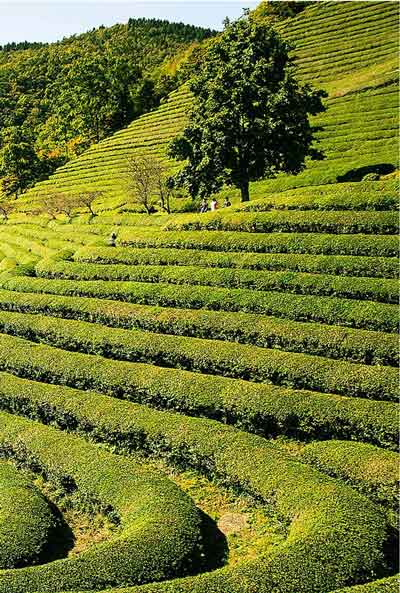
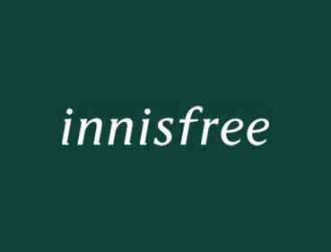

브랜드 스토리
이니스프리는 제주가 주는 자연의 혜택을 담아 건강한 아름다움을 전하고자 하는 국내 대표 자연주의 뷰티 브랜드입니다.
이니스프리는 고객에게 건강한 아름다움을 선사하고 자연의 건강함을 지키기 위해 좋은 원료와 친환경 가치를 우선으로 삼아 노력하고 있습니다.
믿을 수 있는 자연을 담은 원료로 건강한 아름다움을 추구합니다.
안정성에 대한 높은 기준을 가지고 품질을 철저하게 관리합니다.
다양하고 좋은 품질의 제품을 합리적인 가격으로 제공합니다.
자연에 끼치는 영향을 줄이기 위한 친환경 가치를 담은 노력을 지속 확대합니다.
깨끗한 자연을 위해 고객과 함께 친환경 그린 라이프를 실천합니다.

과장 없는 약속과 흔들리지 않는 견고함을 담은 서체에 자연의 생명력을 뜻하는 제주 비자림의 짙은 그린 컬러를 더해 건강한 아름다움을 선사하고자 하는 브랜드의 진정성을 담았습니다.
이니스프리 BI

‘Do not wish to be anything but what you are, and try to be that
perfectly’
Saint Francis de Sales